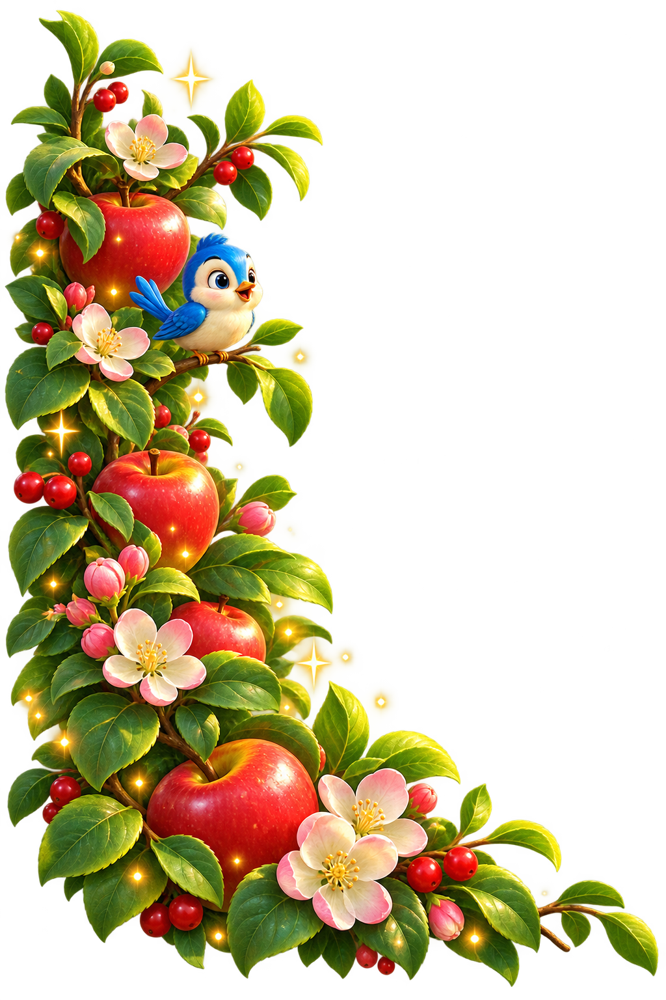
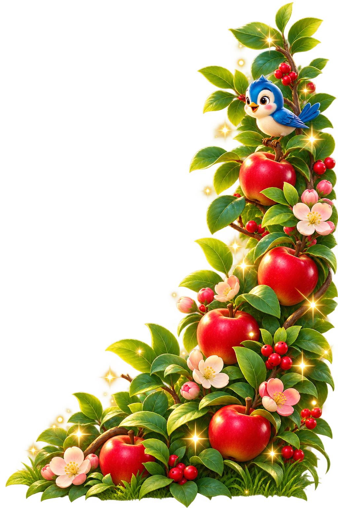
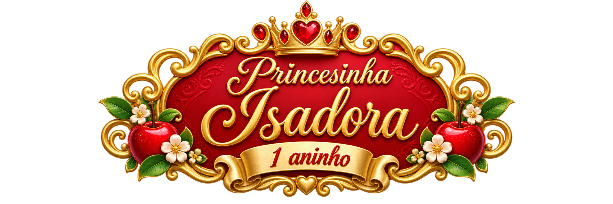
Vim ao mundo para encher a vida de vocês de amor e alegria! Venham comemorar comigo o meu primeiro aninho! 🌸
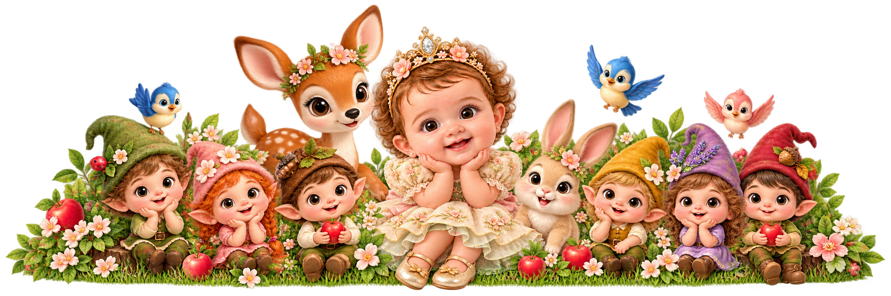
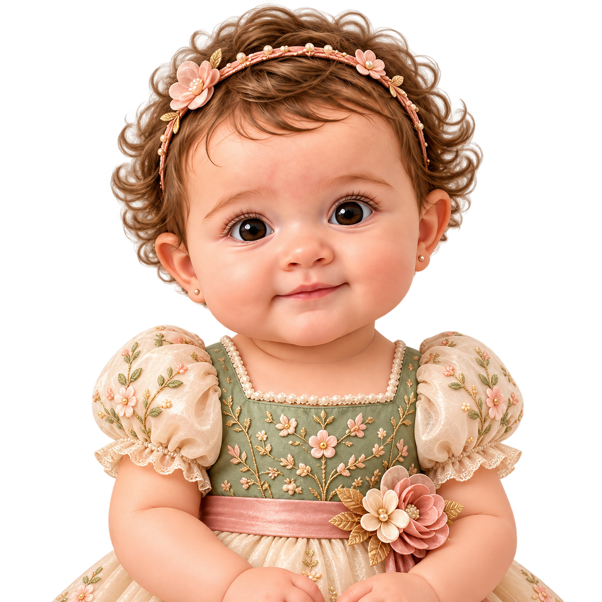
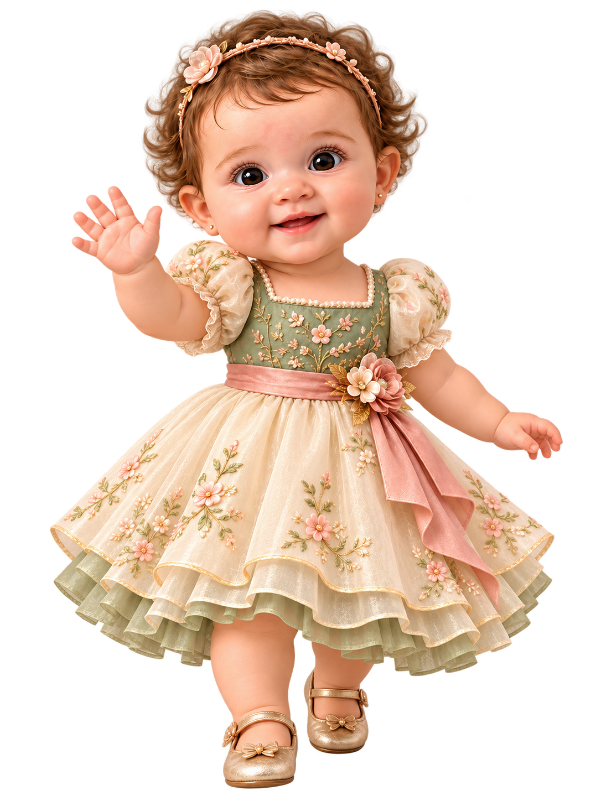
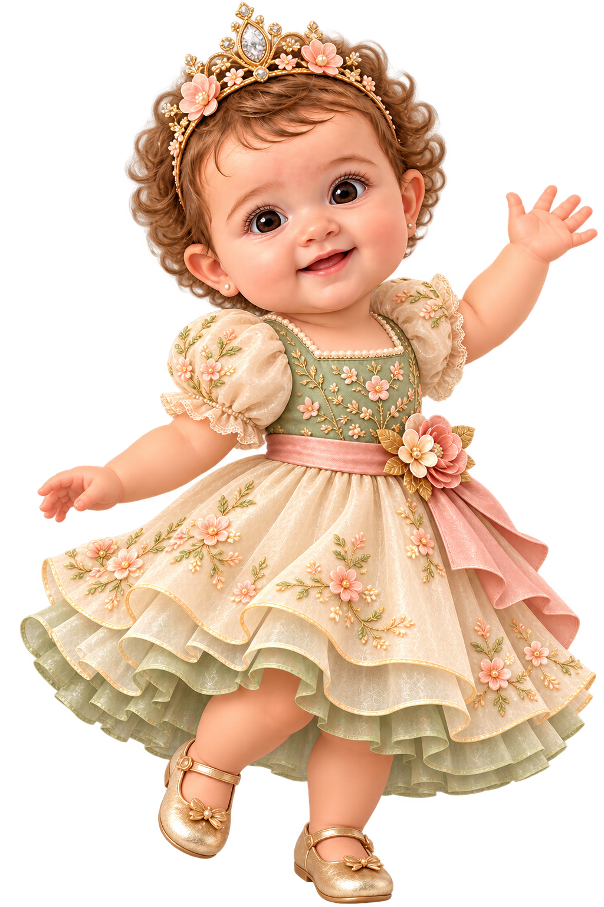
Há um aninho, um pequeno milagre chegou ao nosso mundo com olhinhos curiosos, um sorriso que derrete o coração e um abraço que aquece a alma. Isadora é o nosso maior presente.
Venha celebrar com a gente esse dia tão especial! Queremos ter você por perto para tornar o primeiro aninho da Isadora ainda mais cheio de carinho e alegria. 🌸
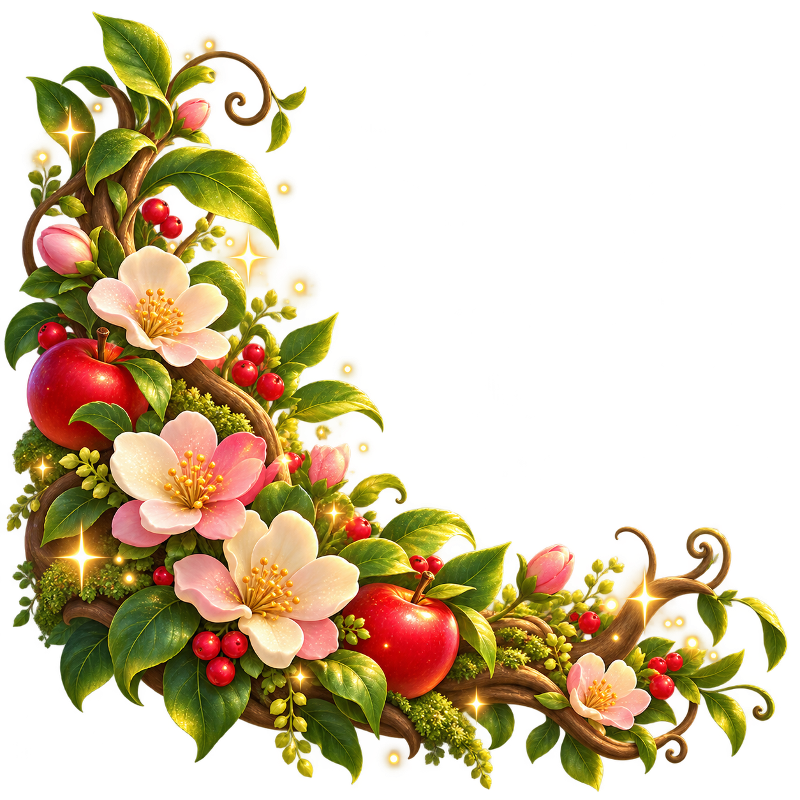
Tudo o que você precisa saber para comemorar conosco o 1º aninho da Isadora!
Domingo, 05 de Janeiro de 2027
Início pontualmente às 19:00 horas.
Chegue cedo para não perder nenhuma surpresa mágica!
Espaço Real Encantado Buffet
Av. das Flores Mágicas, 777 - Jardim dos Contos
Ambiente climatizado, com valet e fácil acesso.
Traje: Passeio Confortável.
Traga toda a sua energia, alegria e amor para comemorarmos o primeiro aninho da Isadora!
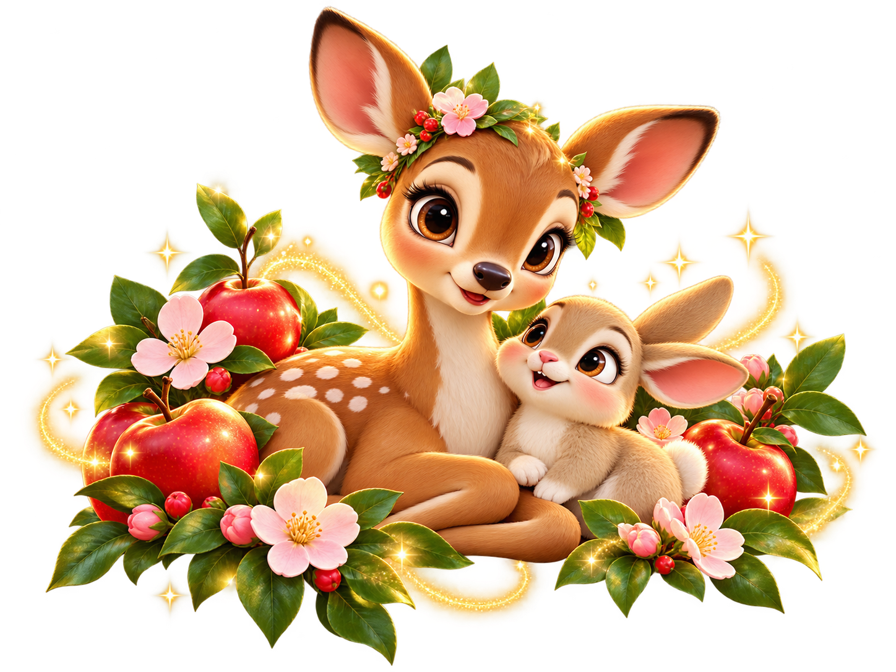
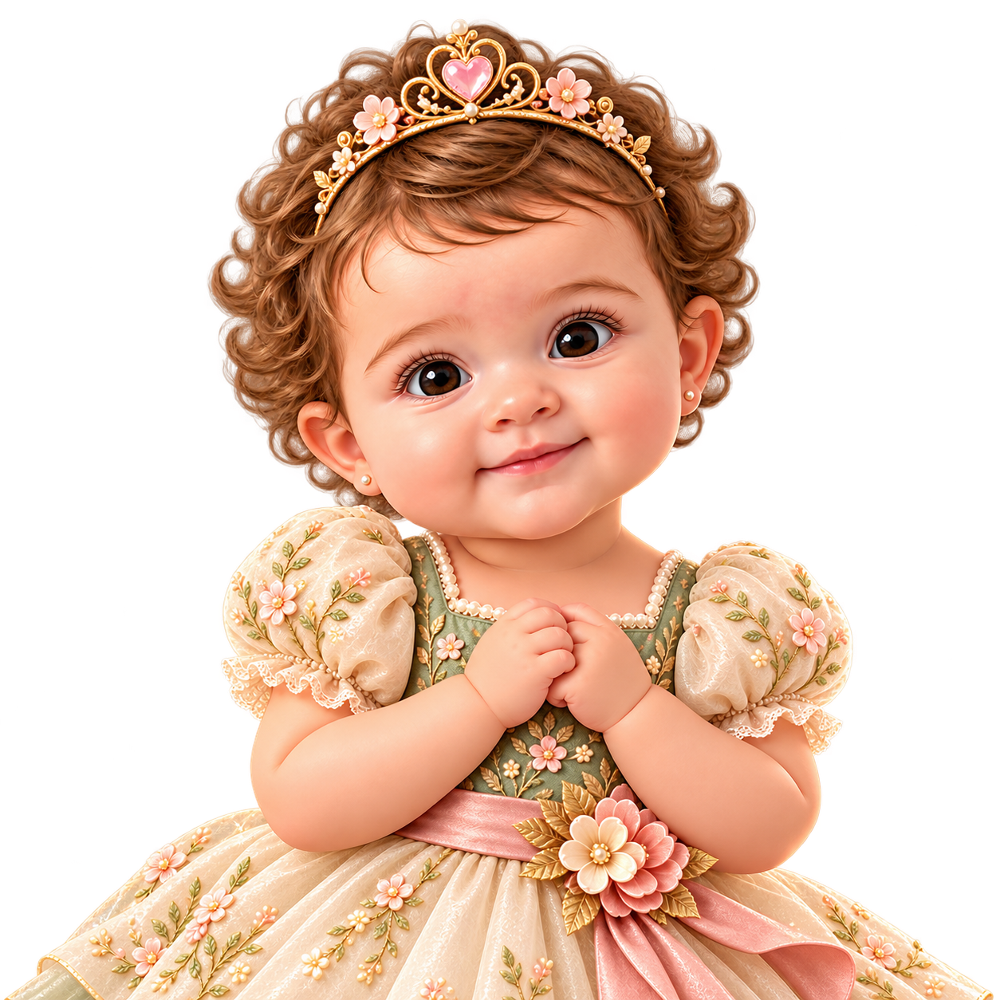
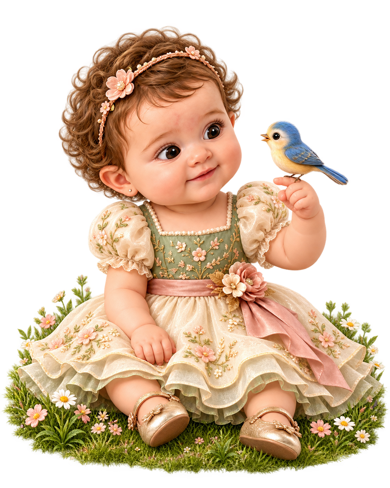
Ouça a doce melodia orquestral que embala os sonhos e a festa da Princesinha Isadora!
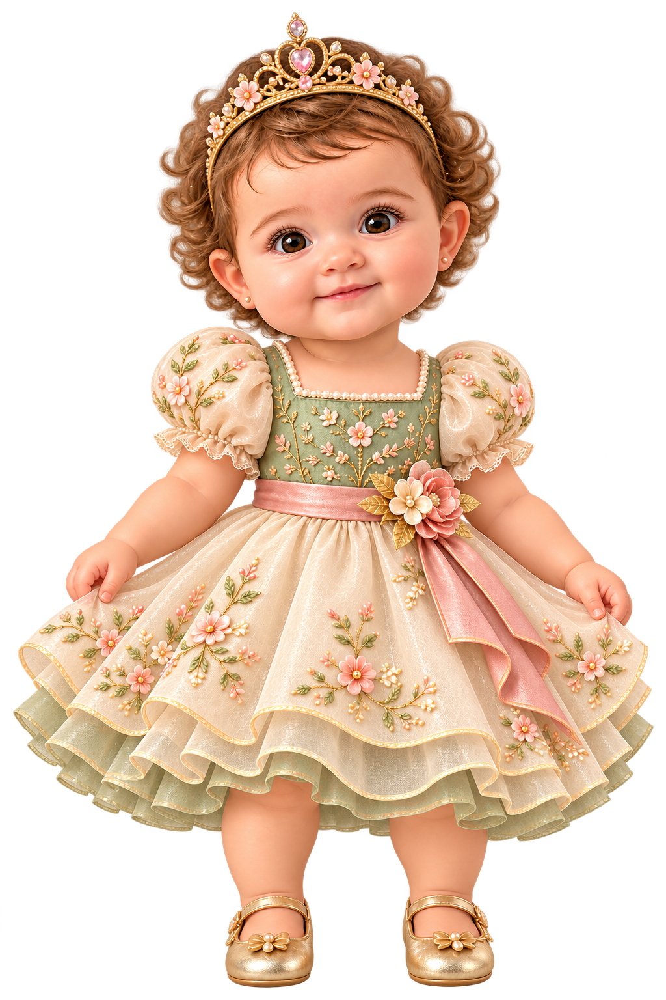
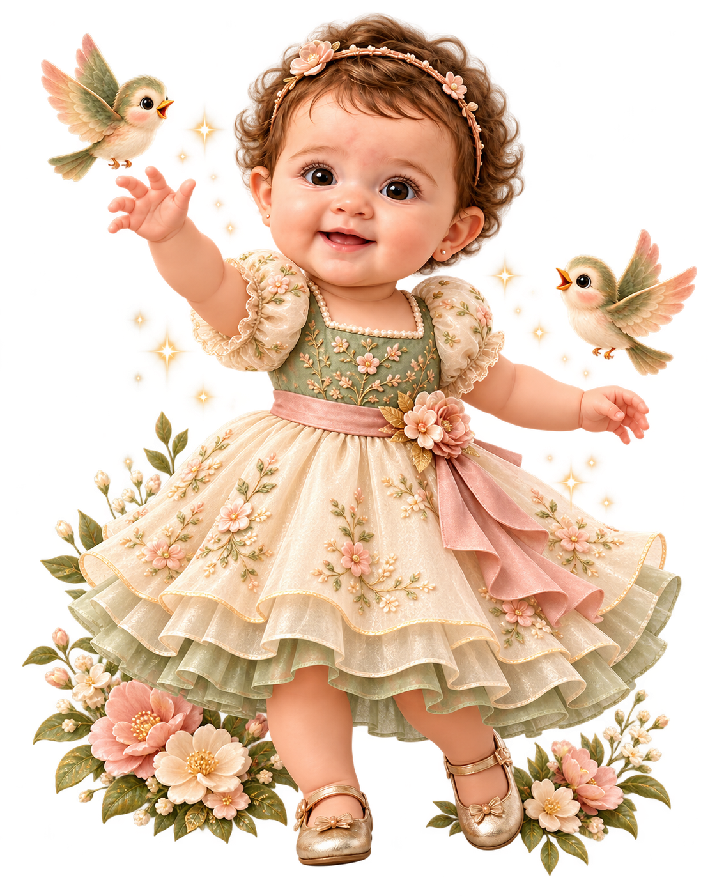
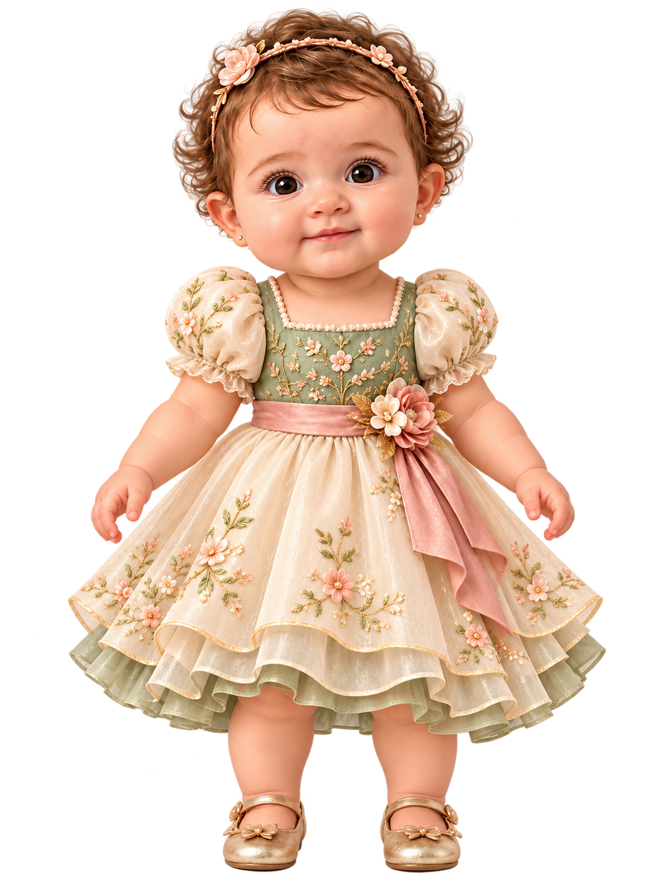
Sua presença vai fazer o coração da nossa princesinha brilhar ainda mais! Confirme sua vinda com carinho até o dia 28 de Dezembro. 💖